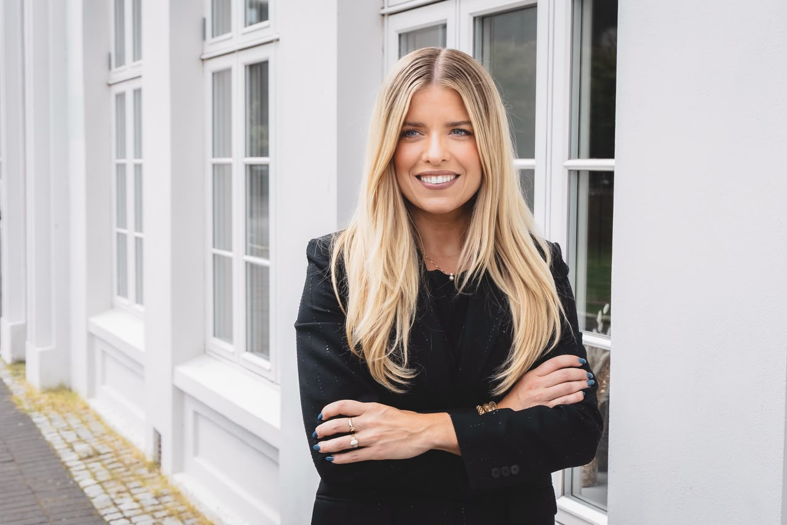
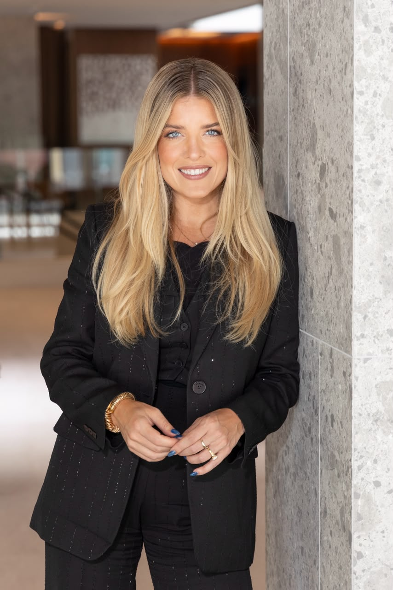
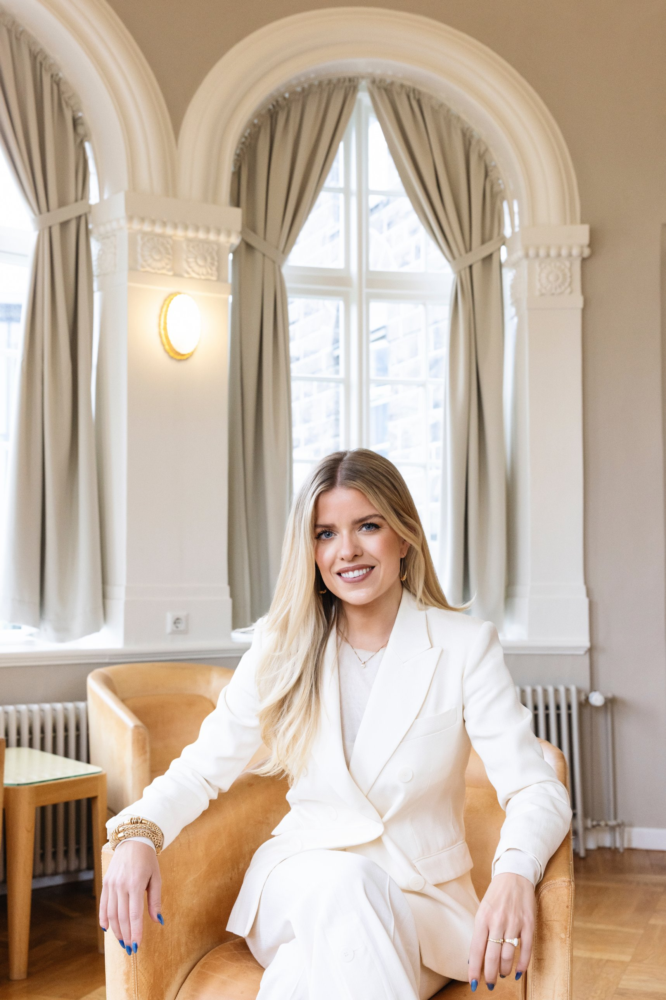
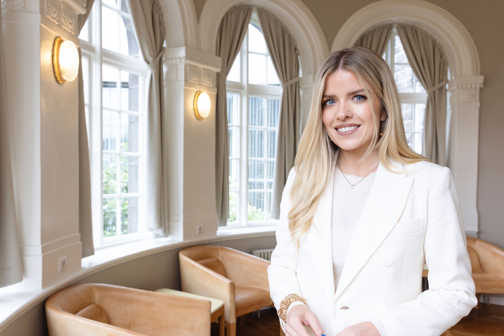
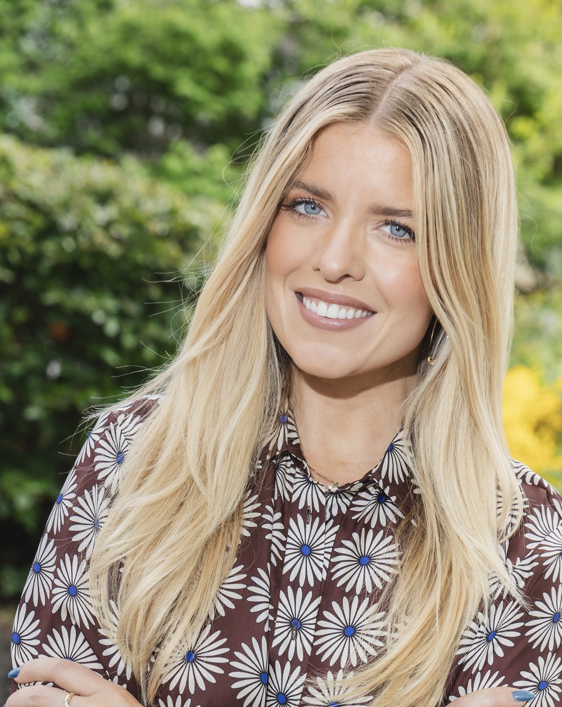
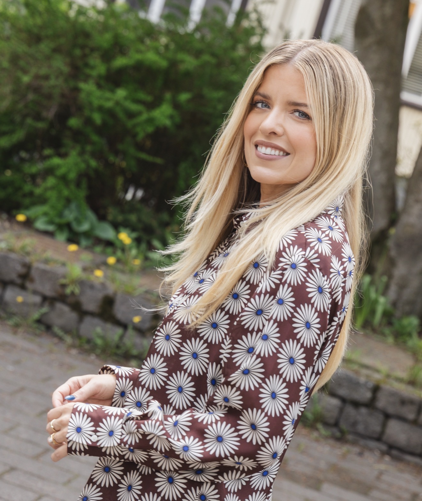

You can call me Arna.
We put AI agents into a world that has run for more than twenty years with real people, real economies and real consequences, and we watch what they do. A flight simulator tests a pilot before anyone boards. We want the same for AI: evidence of how it behaves before it reaches the real world, and a clearer idea of how we coexist.
Við setjum gervigreind inn í heim sem hefur gengið í rúm tuttugu ár með alvöru fólki, alvöru hagkerfi og raunverulegum afleiðingum, og fylgjumst með því hvað hún gerir. Flughermir prófar flugmann áður en nokkur fer um borð. Við viljum það sama fyrir gervigreindina: gögn um hegðun hennar áður en hún fer út í raunheiminn, og skýrari mynd af því hvernig við lifum með henni.
For speaking engagements or other enquiries
Fyrir erindi og aðrar fyrirspurnir
Follow me here for more.
Fylgdu mér hér.
I run a course on setting a clear direction for the different roles in your life, on goals, priorities and finding balance. Join the waitlist and I will let you know about the next dates.
Ég hef haldið námskeið um að setja sér skýra sýn fyrir ólík hlutverk í lífinu, markmiðasetningu, forgangsröðun og að ná jafnvægi. Skráðu þig á biðlista og ég leyfi þér að fylgjast með næstu námskeiðum.





Áslaug Arna Sigurbjörnsdóttir is Senior Director of AI Partnerships at Fenris Creations, where she leads EVE AI Lab, and a Fellow at the Atlantic Council's Global Leadership Center. She served as Iceland's Minister of Justice and Minister of Higher Education, Science and Innovation, and was a member of parliament from 2016 to 2026. She holds an MPA from Columbia University and law degrees from the University of Iceland. She lives in London.
Áslaug Arna Sigurbjörnsdóttir er framkvæmdastjóri gervigreindarverkefnis Fenris (áður CCP Games), þar sem hún leiðir EVE AI Lab, og Fellow hjá Global Leadership Center Atlantic Council. Hún var dómsmálaráðherra og háskóla-, iðnaðar- og nýsköpunarráðherra og sat á Alþingi 2016 til 2026. Hún er með MPA-gráðu frá Columbia-háskóla og lögfræðipróf frá Háskóla Íslands. Hún býr í London.